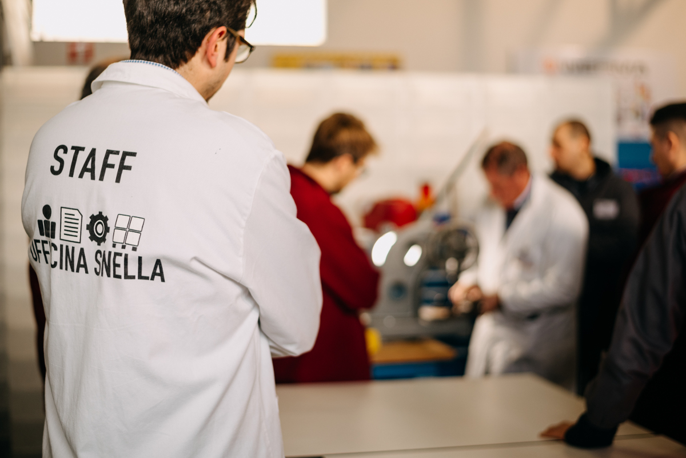
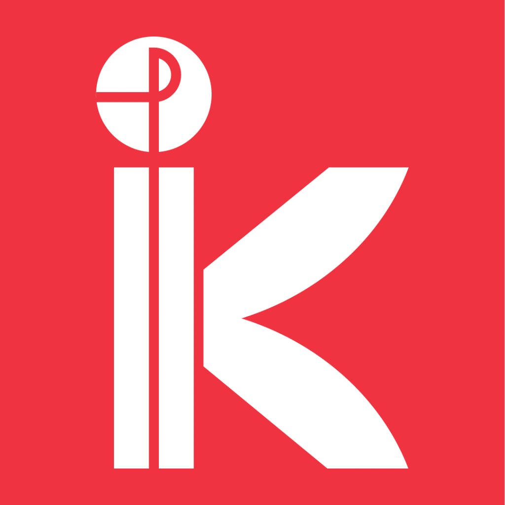

Nata nel 2011, Officina Snella è la prima fabbrica esperienziale del Veneto. Il desiderio dei suoi fondatori era dare al territorio strumenti concreti per aumentare la competitività delle aziende facendo leva su uno dei principi lean fondamentali: il coinvolgimento di tutti.
In questa fabbrica-teatro i partecipanti hanno l’opportunità di vestire i diversi ruoli aziendali, occupandoli in successione uno dopo l’altro, e realizzando la trasformazione del processo produttivo in chiave Lean. Un’esperienza concreta, in un vero contesto di fabbrica, che aiuta a percepire il significato di una trasformazione da un sistema di tipo Push ad uno di tipo Pull.

Officina Snella è organizzata da:
Sintesia S.r.l.Tutto può essere migliorato: oggetti, procedure, servizi. È qui che entriamo in gioco noi. Siamo specialisti della semplificazione e dell’efficientamento in azienda. Lo facciamo coltivando una filosofia, che si chiama Lean. Seguendo un metodo, marchiato Sintesia. E usando i nostri strumenti, che sono anche divertenti. Ci piace snellire le procedure, abbattere i tempi morti, ridurre la sovrapproduzione. E molto altro! |
|
|  |
Kaizen People S.r.l.Kaizen People vuol essere un riferimento per le aziende che del pragmatismo e della concretezza hanno fatto la loro Mission. Attraverso la metodologia KAIZEN porta le Aziende ad introdurre il Miglioramento Continuo nei propri processi e con il coinvolgimento delle persone viene garantito non solo il mantenimento dei risultati, ma anche la crescita culturale di tutte le risorse aziendali. |